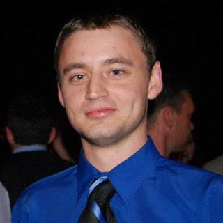

Hi there. The purpose of this webpage is to give an overview of my prototype 3D space RTS game/engine, Displacement. Since some of the features and concepts involved are better seen than described, I've put together a video that covers most aspects:
About me

My name is Simon Stannus and I'm a PhD student finishing up at the University of Tasmania. My research has been in the area of 3D navigation and interaction in geo-visualisations. My final user study tested a glove-based system for 3D interaction in a head-tracked large-screen virtual reality environment. My techniques performed quite well in those tests and serve the task of interacting with geospatial data quite well; however, in the back of my mind I always had the strong desire to apply these techniques to 3D games. The last few months of waiting to hear back on the marking of my doctoral thesis have given me the perfect opportunity to do just that.
Motivation
I've been a gamer for many years and I've particularly enjoyed real-time strategy games ever since I first played a demo of the original Command & Conquer on Playstation. After making the move to the PC and Tiberian Sun it became hard to imagine ever having played an RTS without a mouse. Not long after that Red Alert 2 introduced me to the world of online play and single-player just didn't cut it any more. Then Emperor and C&C Generals came along, with 3D models and a rotating camera that quickly made isometric games look outdated. After some detours through Warcraft III and Starcraft, I eventually eschewed my prejudice against right-click actions and found myself playing Supreme Commander. I was blown away by the sheer scale of the game and the seamless way in which dynamic zooming facilitates control at every level, not to mention countless other features such as templates, editable queues and ferrying routes. Disappointed by the direction Supreme Commander 2 took, I was glad to see Planetary Annihilation continue SupCom's legacy of innovation, with interplanetary combat, area orders and chrono-cam all pushing the genre forward.
I think the burgeoning VR revolution represents the next such leap forward for RTS games. With the two titans of Facebook and Valve investing heavily in both head-mounted displays and dual 6DoF input systems, mainstream gaming will finally have platforms for proper 3D interaction. 3D RTSs such as Homeworld already exist, but the traditional mouse-keyboard-monitor paradigm makes for very clunky camera control and interaction. This project is an attempt to show what an RTS that takes full advantage of VR might look like.
Design principles
3D Interaction
The humble mouse is all well and good for interacting with units on a 2D plane, but runs into problems with 3D environments. Selection is still possible using the projected coordinates of units, but players are slowed down by the extra hassle of making sure not to select distant units behind a closer intended target bunch and vice versa. Issuing move orders is even trickier; the scroll wheel or modifier key must be used to alter the third degree of positional freedom, further slowing down interaction. The solution is to use a 3D input method, allowing the player to, for example, reach behind obscuring units or pinpoint a location in 3D space with one smooth motion.
7DoF Navigation As with interaction, the camera in traditional RTS games is restricted to two dimensions. Some games add an extra degree of freedom for the camera's heading and perhaps another for the angle of elevation from the ground. Zoom also represents a further degree of freedom, bringing the total to 5 (2 for position, 2 for orientation and 1 for zoom). On first glance, a game like Homeworld ups this to 7 degrees of freedom (3 for position, 3 for orientation and 1 for zoom); however this kind of zoom is no different from moving the camera closer to or further from its target, making it just a specific case of positional movement. In a VR environment, instead of a fixed frustum mapping to a virtual camera, you have a transformation representing the mapping between the real and virtual coordinate spaces in which this conventional positional zoom doesn't make sense. However, without projective interaction there is no way to easily deal with collections of units across at various levels of scale; some units might be millimetres apart in real world coordinates while others are separated by metres. The solution is to allow the scale relationship between the two coordinate spaces to be just as adjustable as the positional and orientational ones.
Minimal Abstraction
I am of the firm belief that abstraction should be avoided as much as possible in games. One of the reasons I quite like Supreme Commander is that projectiles are properly simulated, allowing players to actively dodge incoming rounds or jump expendable units into the line of fire to save their higher value ones. Suddenly the range at which the enemy battleship is firing becomes crucial, as does the turning speed of your battleship as you struggle to present the smallest profile before the barrage closes the distance. Pushing the abstraction to low levels like this makes for a more realistic experience and allows certain properties (evasion, in this example) to be derived from other properties in a way that still depends on the skill of the player. Lesser games would abstract such dependent properties into predefined constants that combine with random number generation to mimic this behaviour, but in my mind that is a move away from the cutting edge of technology and back toward the realm of character sheets and D20 rolls.
Newtonian Physics
Space is space. While we are accustomed to terrestrial RTS games where units have a set speed at which they move, in space there is no atmospheric drag to constrain velocity. Instead of speed, units are differentiated by the rate at which they accelerate. Assuming no fuel economics, a unit will ideally accelerate constantly to reach their target, initially in the direction of their target and finally in the reverse direction to kill their velocity by the time they reach it. In some situations, velocity limits may arise, such as flying through regular asteroid fields of a certain granularity, but this is another example of high-level behaviour deriving from lower-level systems (in this case path-finding and collision-avoidance) rather than artificial abstractions.
Distributed Networking
As with most modern RTS games, my engine uses a deterministic lock-step model to run its underlying simulation. This has two main advantages; there is no need for a central server and network traffic is reduced to just the orders that each player issues (and I'm doing further compression on those by caching past selection groups).
The first point is important to both me as a developer and also any potential community of players. The costs involved in maintaining servers are a financial burden I can do without and depending on them leaves the entire community vulnerable to a single point of failure (be that downtime or end of support).
The second point is coloured by my experiences hitting the bandwidth wall playing in a centrally-simulated RTS and watching in frustration as the positions of the units updated in a manner alarmingly like that of a slow paper printout, usually as an opponent's blob of death converged on my base. What makes such a problem frustrating is the suspicion that you're being penalised for your geographical remoteness and that your opponent may purposefully trigger such a problem by over-producing cheap spam if he suspects he has the better bandwidth. A distributed approach doesn't have this problem, though it is constrained by the slowest CPU among the set of players; however this degradation effects all players equally, regardless of machine specs and the vagaries of transnational routing.
Flexibility
Before my programming abilities had advanced much further than QBasic, I enjoyed dabbling with customising units in TS and RA2. This gave me an appreciation of the power of easy text customisation and roughly inspired the design of my rule parsing system.
Inspirations
As an avid player of games and consumer of all things sci-fi, I thought I should mentions some of my inspirations :
Battlestar Galactica for its portrayal of RCS mechanics
Elite: Dangerous for showing how beautiful space can be in VR
Firefly for just generally being awesome
Homeworld for pioneering 3D RTS
Planetary Annihilation for area commands and Chrono-Cam
Supreme Commander for dynamic zoom and proper game simulation
Zones of Thought series for capturing the essence of space across so many scales of space and time
Implementation
I used Unity and its Oculus plugin for my initial navigation proof of concept, but my current development is in Java. This makes my engine something of an oddity in the gaming arena where C++ reigns supreme, but it makes sense for a number of reasons:
Its exacting spec. (especially strictfp arithmetic) makes porting and ensuring deterministic calculation easier
Its reflection capabilities mean that there is zero boilerplate for loading text variables
ObjectInputStream and ObjectOutputStream make serialisation easy.
Snappy compilation; a full clean-and-build on my 7000 or so lines of code across 100+ classes takes around 5 seconds
Much more semantically-aware and robust editing tools (in the form of Netbeans)
Easy library management with Maven
Rendering is done in modern OpenGL with my own mix of basic shaders and I make use of the following libraries:
LWJGL 3(Java and native binaries) for the OpenGL bindings
JOML(pure Java) for vector maths
oObjLoader and PNGDecoder(pure Java) for loading of models and images
Sixense-Java(Java and native binaries) for access to the Razer Hydra
Progress
Below is a rough estimate of the progress I have made in the various components of the project. The bars represent the approximate percentage of required raw code written so far. Additionally, functional components are shown in green , components with non-trivial bugs are shown in orange and untested components are shown in grey .